ParallaxCompare exploration report
8 confirmed findings: 1 P1, 5 P2, 2 P3. Tested source 90c6ecfe5ccc30e50a76e536b56fb551f924c36a, bundled release build.
Observed app time across two sessions: 66.2 minutes; 1624 completed mixed-use cycles, plus targeted manual reproductions. The interrupted interval is excluded.
Run integrity and limitations
- Initial driver and application disappeared after approximately 51 minutes; cause unconfirmed. Connection-refused time is excluded from app time and successful cycles.
- Initial PR form persistence caused 69 harness failures; resumed pending native conflict-marker dialogs caused four comparison timeouts. These are not product findings.
- Sessions use Linux/WebKitGTK on local storage. No real SMB, SharePoint, Windows or macOS measurement. Timings include WebDriver waits and are illustrative single-machine observations.
- Peak memory followed million-line comparisons and solid archives; no memory leak was established.
Build, Svelte checks (0 diagnostics), 15 frontend tests and frontend production build passed. Coverage included folder filters/copies, text editing and encodings, large files, nested ZIP/solid 7z, Git refs and a real read-only PR, needs, Nix, DCM/PDX/ECUC, SCORE, images, office files and three-way merges.
Findings
| ID | Priority | Problem |
|---|
| E05 | P1 | Cached archive-member tabs miss external replacements and bypass stale-save confirmation |
| E03 | P2 | Filtered parent copy promises to replace an archive but skips it when matches exist only on the destination |
| E04 | P2 | Copying a filtered parent creates hidden empty directory trees |
| E06 | P2 | Flat matching stops pairing an entire moved-file group after its candidate cap is crossed |
| E07 | P2 | Closing a New comparison tab during opening lets the completed comparison reappear and steal focus |
| E08 | P2 | The GUI removes a glob escape inside brace alternatives and selects the wrong files |
| E01 | P3 | Correcting an unfinished quote leaves a stale pattern error |
| E02 | P3 | Quoted exact patterns cannot match names with leading or trailing spaces |
E05 · P1 · Cached archive-member tabs miss external replacements and bypass stale-save confirmation
- Create dirty.zip containing a.txt = old A\n and b.txt = old B\n. Compare a plain old-A file with dirty.zip!/a.txt directly, so no folder-comparison tab is open.
- Edit the archive-side line to my edited A and leave the editor to commit the draft.
- From another program atomically replace dirty.zip with a new ZIP containing a.txt = EXT A\n and b.txt = EXT B\n. Reproduces both with an ordinary new mtime and after restoring the old size/mtime. The UI receives the watcher event and displays The file changed on disk.
- Press Ctrl+S. No overwrite confirmation appears.
- In a clean archive-member tab, repeat replacement without making a draft and observe the automatic reload.
Observed: Ctrl+S writes my edited A over EXT A without asking; EXT B is preserved. A clean tab automatically reloads the cached old A and continues to say the files are identical, although the archive now contains EXT A.
Expected: Reload/read and stale-save validation must use the current container. An externally changed edited member must require confirmation before replacement; unrelated entries must remain preserved.
Cause and fix direction: Watcher callbacks emit paths-changed but do not invalidate source VFS caches. TextView.load calls open_file_diff -> load_side, and save_side checks its on_disk stamp through the same cached ArchiveMount. ArchiveMount.apply correctly reopens the current container for rewriting, but only after the stale-content check already accepted the cached old member. Invalidate the affected container and all derived nested indexes before reload/save validation; invalidating only the inner path does not evict its enclosing archive. Add direct archive-entry sessions to stale-save and reload regressions, including atomic same-size/same-time replacement.
Source: app/src-tauri/src/commands.rs:436, app/src-tauri/src/commands.rs:1588, crates/parallax-core/src/vfs/mount.rs:154
Evidence
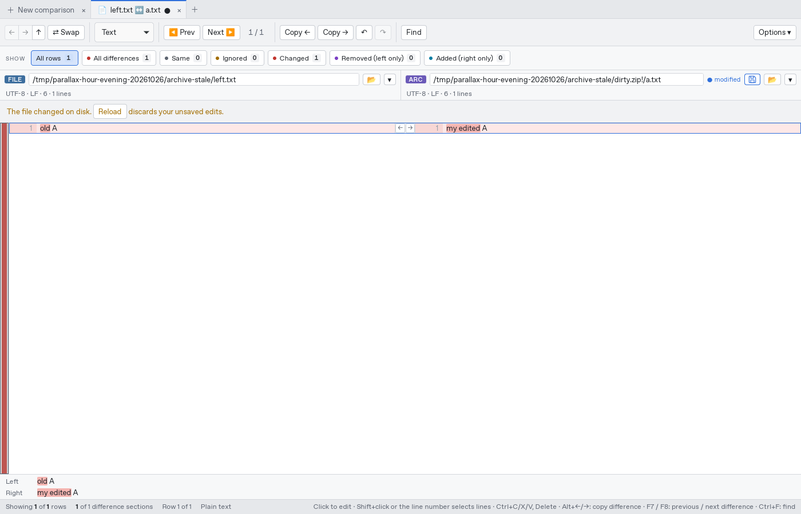
screenshots/50-archive-external-before-save.png
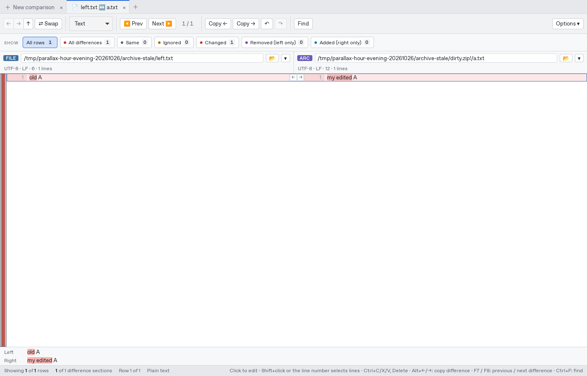
screenshots/51-archive-save-native.png
screenshots/52-archive-after-stale-save.png
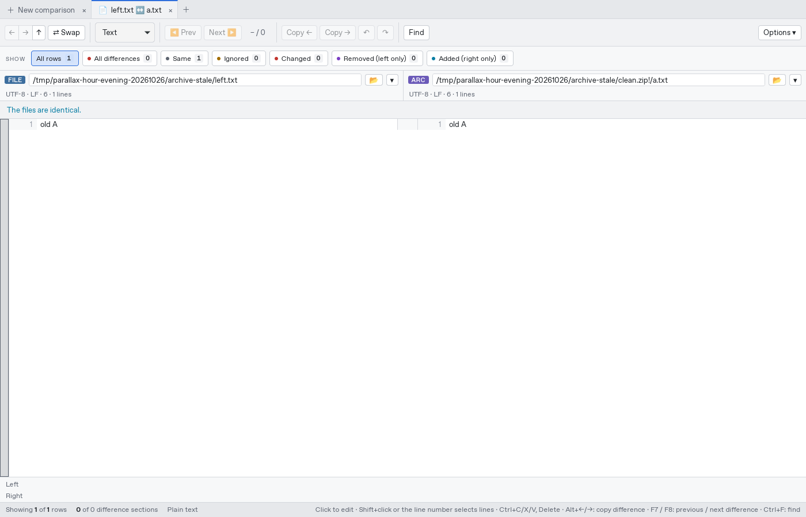
screenshots/53-archive-clean-stale-view.png
archive-stale.log
archive-stale-ordinary.log
E03 · P2 · Filtered parent copy promises to replace an archive but skips it when matches exist only on the destination
- Create wrapper/normal.txt on both sides with different text.
- Create wrapper/bundle.zip on the left containing only hidden.bin; on the right include hidden.bin and keep.txt.
- Compare folders, apply *.txt, select wrapper and Copy →; accept the confirmation.
Observed: The confirmation lists wrapper/bundle.zip as a whole archive to be replaced. Only normal.txt is copied; the target ZIP keeps its old hidden.bin and right-only keep.txt. Copying the archive row directly instead does replace it.
Expected: The copy plan and confirmation must agree for the same operation. Either include this displayed archive in the atomic copy, or omit it from the confirmation and explain the skip.
Cause and fix direction: copyFilesBelow stops at every visible source archive. ops::copy_keeps rechecks matching descendants only in the source, while the compare tree was retained because of a matching destination descendant. Use one shared operation plan/eligibility policy for preview and execution.
Source: app/src/lib/tree.ts:214, crates/parallax-core/src/ops.rs:114
Evidence
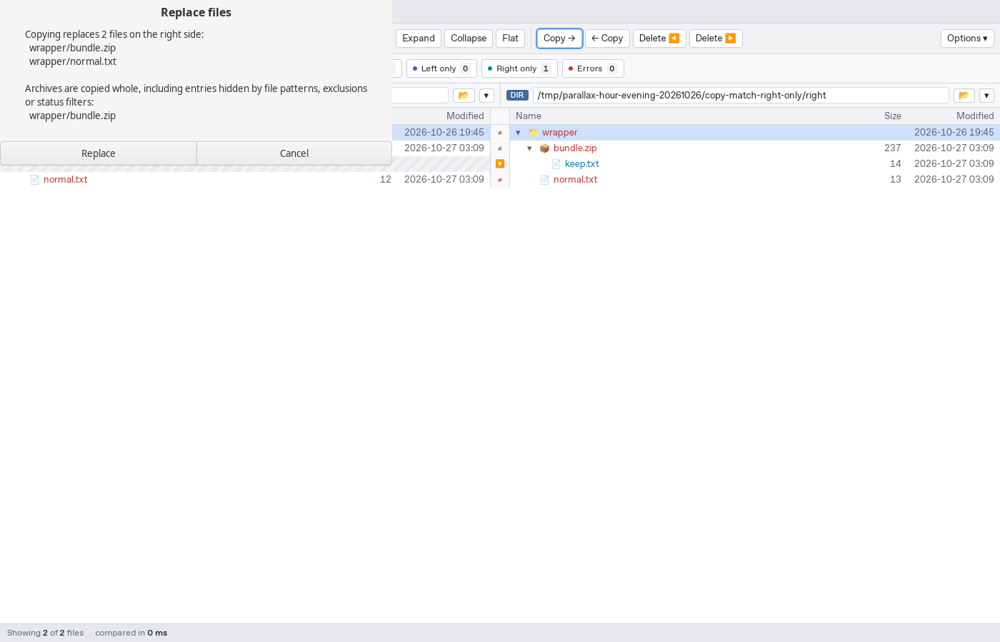
screenshots/21-copy-match-right-only-confirmation.png
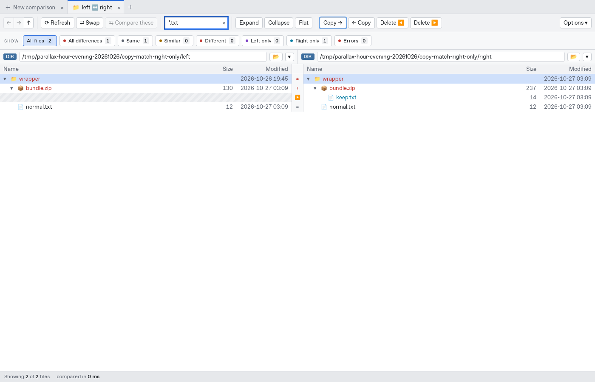
screenshots/22-copy-match-right-only-after.png
copy-round.log
E04 · P2 · Copying a filtered parent creates hidden empty directory trees
- Create left/wrapper/normal.txt and left/wrapper/hidden/deep/secret.bin; create right/wrapper/normal.txt only.
- Compare folders, apply *.txt; hidden/deep is pruned from the displayed tree.
- Select wrapper and Copy →; accept replacing normal.txt.
Observed: The destination gains wrapper/hidden/deep even though that subtree had no matching files and was absent from the filtered view. secret.bin is correctly not copied, leaving an empty directory tree.
Expected: Directory creation should follow the same include-pruning policy as the comparison; avoid touching unmatched hidden subtrees.
Cause and fix direction: Filter::keeps admits all Dir entries, and ops::copy_entry creates each directory before discovering there are no matching files. collect_changes has the same traversal policy for archive destinations. Build/prune a copy plan before creating directories, while preserving explicitly selected or explicitly matched empty folders.
Source: crates/parallax-core/src/ops.rs:187, crates/parallax-core/src/compare.rs:300
Evidence
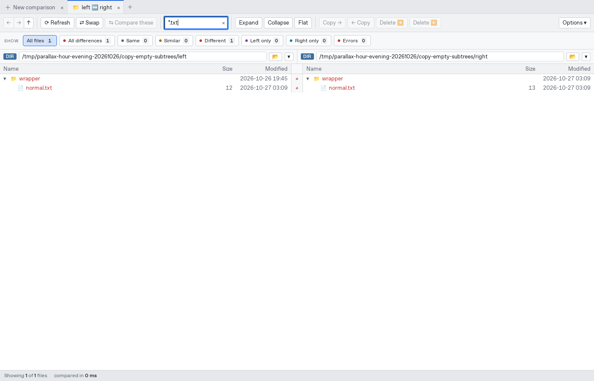
screenshots/20-copy-empty-subtrees-before.png
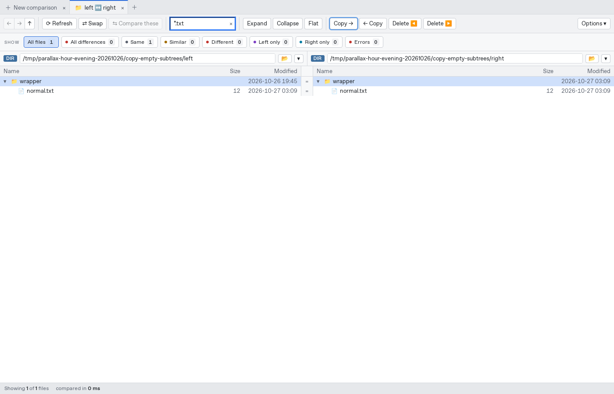
screenshots/22-copy-empty-subtrees-after.png
copy-round.log
E06 · P2 · Flat matching stops pairing an entire moved-file group after its candidate cap is crossed
- Create left/old0000/index.txt through old0099/index.txt and right/new0000/index.txt through new0099/index.txt; all files contain identical file\n.
- Compare the folders and enable Flat: there are 100 matched Same rows.
- Repeat with 150 folders on each side, retaining identical contents and the same basename.
Observed: At 150 files per side, Flat shows 300 one-sided rows (150 left only, 150 right only) and zero Same rows, instead of pairing them as for the 100-file case.
Expected: The optimization should preserve a consistent moved-file matching policy or explicitly disclose its limits. Do not silently change matching solely because the group crossed a performance cap.
Cause and fix direction: movedPairs switches when left.length * right.length > MAX_CANDIDATES (20,000). The bounded matchByFolderSuffix fallback has no final fallback for remaining same-name files with completely renamed folders. Retain bounded work but pair remaining candidates deterministically or by a bounded content/fingerprint strategy; add tests across the threshold. This is a behavioral gap in the fix for the old quadratic matching issue #8/F18, not a renewed allocation explosion.
Source: app/src/lib/tree.ts:335
Evidence
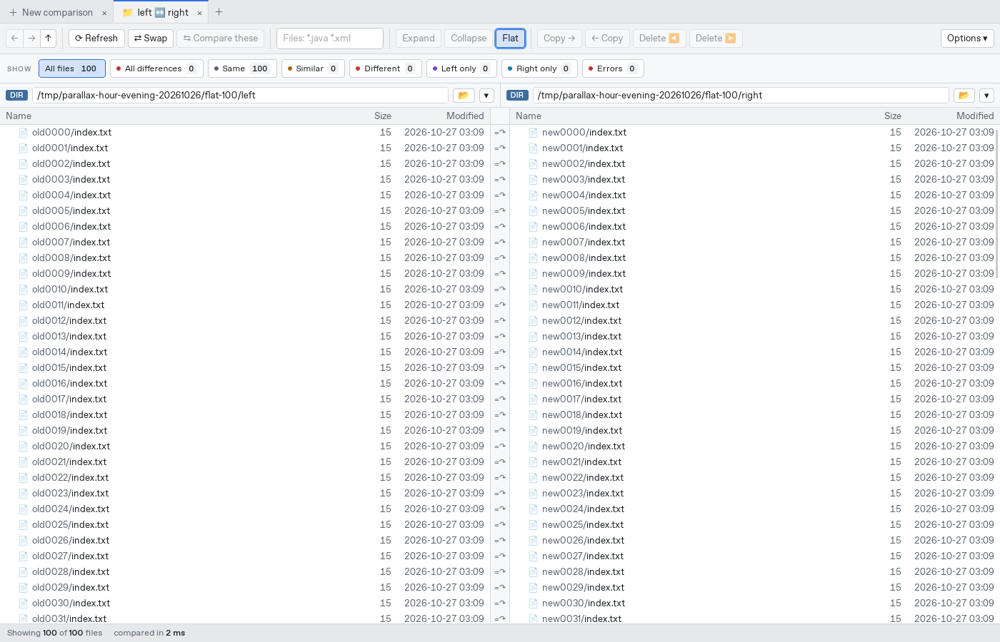
screenshots/60-flat-100.png
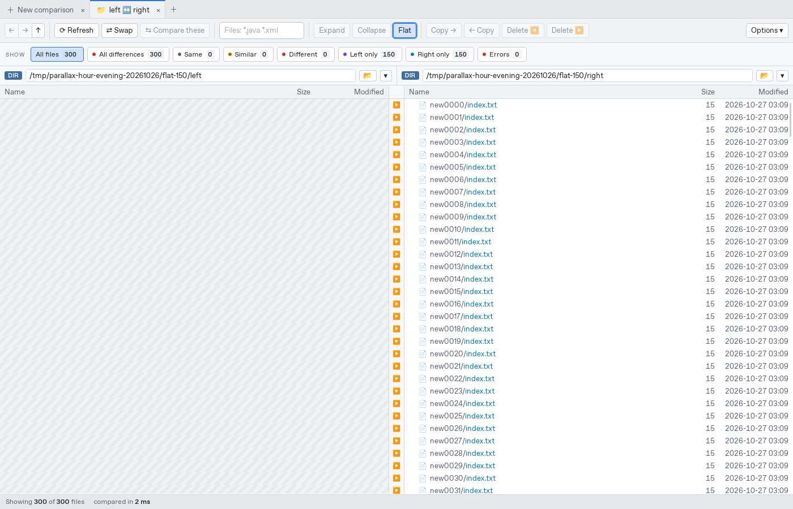
screenshots/60-flat-150.png
flat-round.log
E07 · P2 · Closing a New comparison tab during opening lets the completed comparison reappear and steal focus
- Fill a New comparison with valid sources.
- Click Compare and immediately close that form tab while open_session is pending. Slow sources make the window for this action longer; the native reproduction dispatches the two actions in one event turn.
- Wait for the open operation to finish. Reproduces for both file and folder comparisons.
Observed: The form is removed, but a newly created comparison tab appears and becomes active when the result arrives.
Expected: Closing the initiating form should abandon its result, free any late session and keep the remaining active tab selected.
Cause and fix direction: App.start awaits api.openSession then looks up replaceKey; a missing initiating tab falls through to tabs.push and active = tab.key. Apply the same pending-request ownership, late-result cleanup and focus-preservation rules added to CLI startup in PR #16. A normal start with no replaceKey must still add a tab.
Source: app/src/App.svelte:196
Evidence
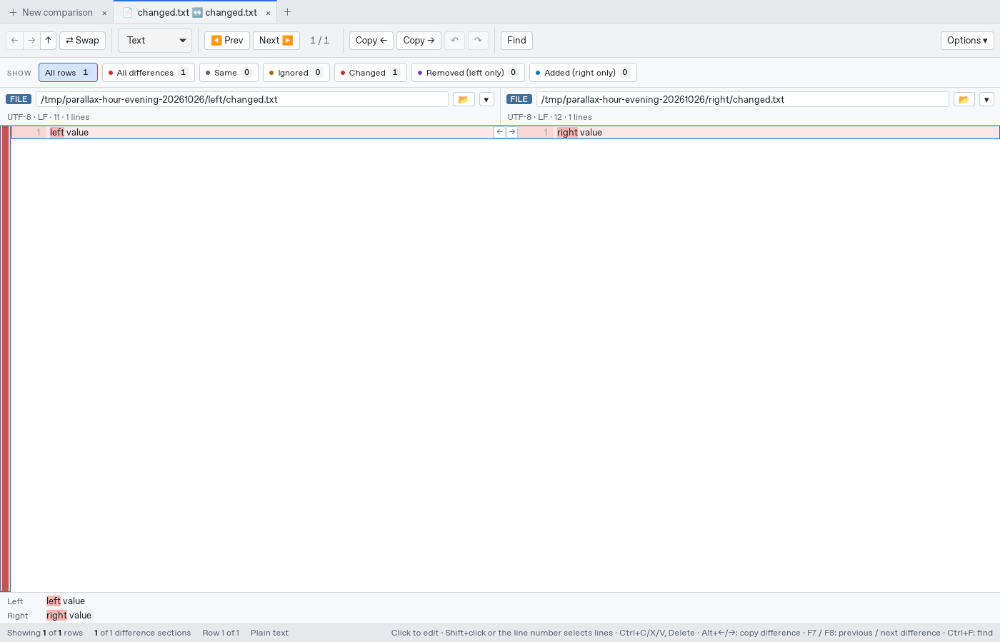
screenshots/70-cancel-new-form-True.png
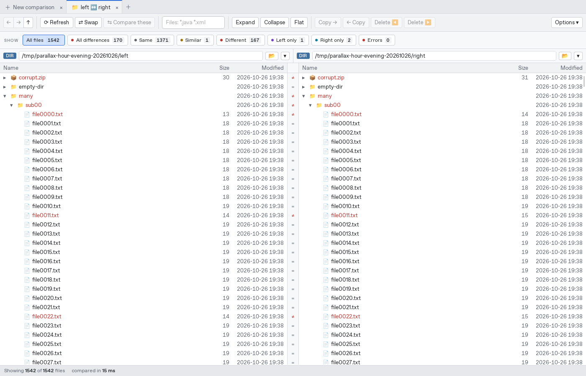
screenshots/70-cancel-new-form-False.png
cancel-form-round.log
E08 · P2 · The GUI removes a glob escape inside brace alternatives and selects the wrong files
- Create a,b.txt, a.txt, b.txt and c.txt on each side.
- In the folder Files field enter {a\,b,c}.txt. This means the literal a,b.txt or c.txt.
- Compare the result with run_compare includes=["{a\\,b,c}.txt"], preserving the escape in the backend argument.
Observed: The GUI selects a.txt, b.txt and c.txt (three rows), omitting a,b.txt. The same production backend with the intact pattern selects a,b.txt and c.txt (two rows).
Expected: Preserve glob escapes that protect alternate syntax, so GUI and backend pattern semantics agree.
Cause and fix direction: splitPatterns consumes backslash + comma as a list-separator escape even inside braces (and within a quoted glob). The emitted glob becomes {a,b,c}.txt. Preserve syntax-level glob escapes while tokenizing list separators; test escaped commas inside alternatives and round-tripping saved patterns.
Source: app/src/lib/patterns.ts:9
Evidence
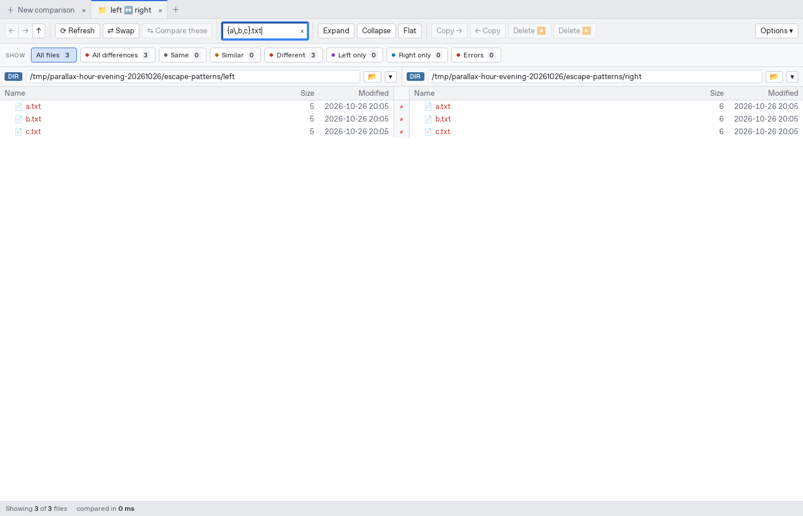
screenshots/72-escaped-comma-alternative.png
escape-round.log
E01 · P3 · Correcting an unfinished quote leaves a stale pattern error
- Compare literal-only/left and literal-only/right; apply *.txt.
- Enter an unfinished double quote, wait for the error, then restore *.txt.
Observed: The original results remain usable, but the error Close the quote around the file pattern remains after the input is valid. Refresh clears it.
Expected: Clear the parse error when the current text parses successfully, including when it resolves to the already-active pattern list.
Cause and fix direction: FolderView.applyPatterns/applyExcludes return early for an unchanged list, without clearing error. Store pattern validation errors separately from compare/operation errors and clear successful validation before that return.
Source: app/src/lib/FolderView.svelte:300, app/src/lib/FolderView.svelte:431
Evidence
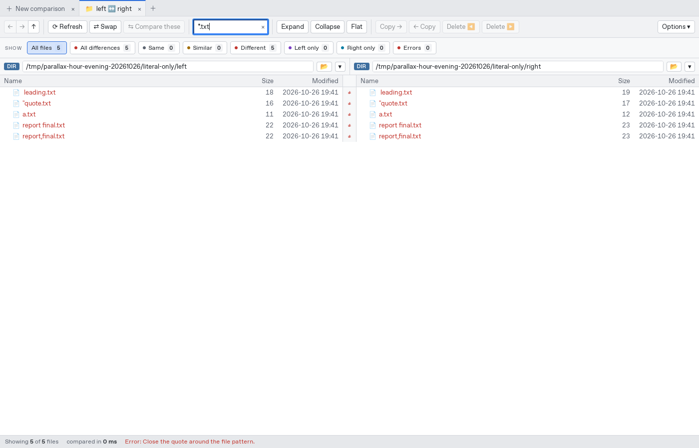
screenshots/02-error-after-correcting-quote.png
pattern-round.log
E02 · P3 · Quoted exact patterns cannot match names with leading or trailing spaces
- Create left and right files named " leading.txt" and "trailing.txt ".
- Compare the folders. *.txt* shows both files.
- Enter the quoted exact pattern " leading.txt" or "trailing.txt ".
Observed: The exact patterns return zero files although the files exist and broad wildcard patterns find them.
Expected: Quoted literal filenames should preserve their boundary spaces. Leading spaces are valid on Windows and Unix; trailing spaces are Unix-specific.
Cause and fix direction: splitPatterns.emit trims all token text, including quoted whitespace, and Includes::new trims patterns again. Preserve quoted/escaped boundary characters across tokenization and core compilation; trim only unquoted list separators.
Source: app/src/lib/patterns.ts:6, crates/parallax-core/src/compare.rs:203
Evidence
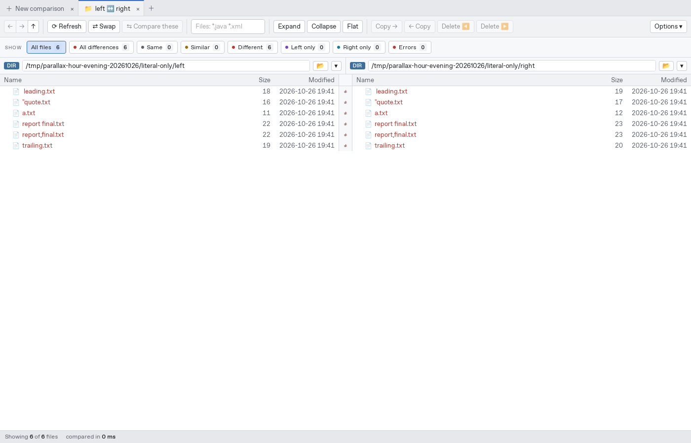
screenshots/01-literal-baseline.png
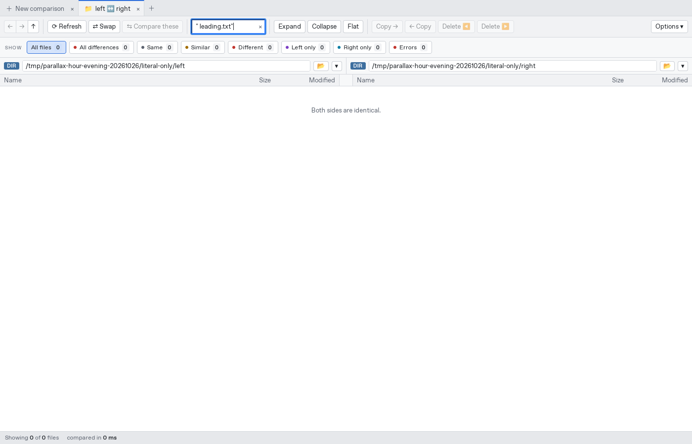
screenshots/03-literal-whitespace-True.png
screenshots/03-literal-whitespace-False.png
pattern-round.log
Performance observations
100,000/1,000,000-line text comparisons opened in about 0.86/0.96 seconds; sampled large-file scroll updates took about 20–130 ms. A 64 MiB-per-side solid 7z comparison opened in about 0.88 seconds. 4,000 independent merge conflicts opened in about 0.18 seconds, with one choice taking about 0.21 seconds including a 0.20-second harness wait. These are observations, not benchmark guarantees.
The high-water measurements include deliberate large-file and archive stress. E06 describes a correctness gap in a bounded matching optimization; the earlier unbounded quadratic allocation was not reproduced.
| Session/process | First RSS MiB | Last RSS MiB | Max HWM MiB |
|---|
| initial/parallax-compar | 179.4 | 858.5 | 1217.5 |
| initial/WebKitNetworkPr | 53.0 | 53.7 | 53.8 |
| initial/WebKitWebProces | 280.2 | 546.7 | 654.1 |
| initial/git | 1.9 | 1.9 | 1.9 |
| resume/parallax-compar | 181.7 | 364.9 | 644.8 |
| resume/WebKitNetworkPr | 53.1 | 53.8 | 53.8 |
| resume/WebKitWebProces | 279.4 | 511.7 | 700.4 |
Reproduce and inspect
Portable fixture generator · Structured findings · Runtime summary · Report notes